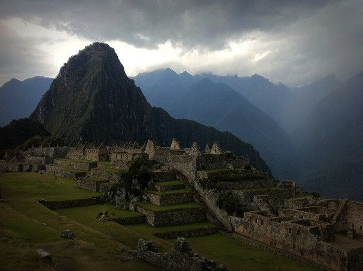

Fri, 12 Nov 2010 07:05:06 · Peru · MachuPicchu · Machu Picchu · travel · Photography · Archeology
dawn in machu picchu peru

Dawn in Machu Picchu, Peru.
Fri, 12 Nov 2010 07:05:06 · Peru · MachuPicchu · Machu Picchu · travel · Photography · Archeology

Dawn in Machu Picchu, Peru.